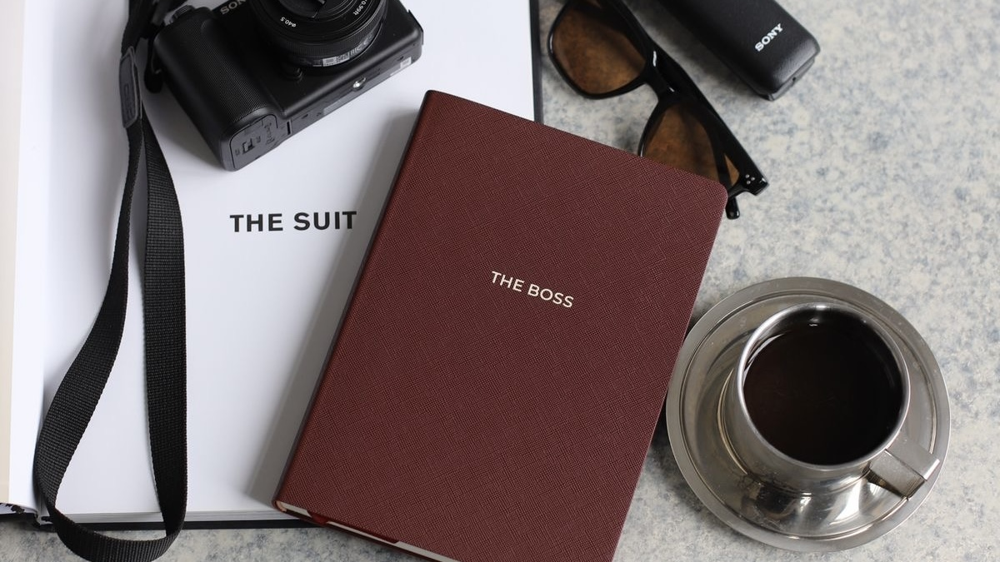

Готовый скилл, который превращает Claude в личного видеомонтажёра. Кидаешь сырое видео — получаешь смонтированный ролик: паузы вырезаны, речь ускорена, субтитры слово-в-слово, заголовки, вставки со звуками, музыка. Всё в едином минималистичном стиле.
Нужен Claude Code (приложение для компьютера, Mac или Windows) с подпиской. Скачать: claude.com/claude-code. Если Claude у тебя уже стоит — пропускай этот шаг.
Скилл — это один текстовый файл-инструкция для Claude. Два способа получить:
Дальше просто скажи Claude: «создай мне скилл для монтажа reels, вот файл» — и приложи файл (или вставь скопированный текст). Claude сам положит его куда нужно. Всё, скилл подключён.
Попроси Claude: «создай папки для монтажа по скиллу» — он сделает на рабочем столе папку reels с подпапками. Вот что куда класть:
| Папка | Что туда класть |
|---|---|
input | Сырое видео, которое надо смонтировать |
inserts | Скрины и картинки только для этого ролика |
context_assets | Картинки и видео, которые можно использовать во всех роликах (Claude сам выберет подходящие по смыслу). Называй файлы понятно: «скрин статистики.jpg», «мем кот.jpg» |
library | Файлы шаблона: полоски и градиент (скачай ниже) |
stickers | Иконка, которая будет стоять у субтитров (PNG без фона) |
music | Фоновая музыка (mp3) |
sfx | Короткие звуки для появления вставок (свуш, поп) |
fonts | Шрифты: для заголовков, для субтитров и рукописный (скачай ниже) |
output | Сюда Claude положит готовый ролик — отсюда забираешь |
Это мои готовые файлы — с ними ролики будут выглядеть как у меня. Скачай и разложи по папкам:
Открой Claude, попроси смонтировать и напиши простое ТЗ. Волшебной формы нет — пиши по-человечески. Главное указать три вещи: хук (заголовок в начале), кодовое слово (если в ролике есть призыв) и какие вставки где показать.
Claude смонтирует ролик и положит его в папку output. Первый ролик может занять несколько минут и потребовать пару правок — это нормально: так ты настраиваешь шаблон под себя. Дальше каждый новый ролик будет собираться по накатанной: закинула видео → написала ТЗ → забрала готовое.
Монтаж теперь занимает минуты, а не вечер. Но смонтированный ролик — это ещё не система: что снимать завтра, кому и зачем — этим мы занимаемся на интенсиве.
ИнтенсивГайды — это отдельные детали. На интенсиве мы собираем из них систему, чтобы блог рос не от одного удачного ролика, а от того, что за ним стоит.
Дело не в удаче и не в количестве роликов. Дело в том, кому вы говорите, что именно и куда ведёте человека дальше.
Вечный доступ · чат поддержки со мной · формат VIP с личным сопровождением
{kind=link}
{kind=link}